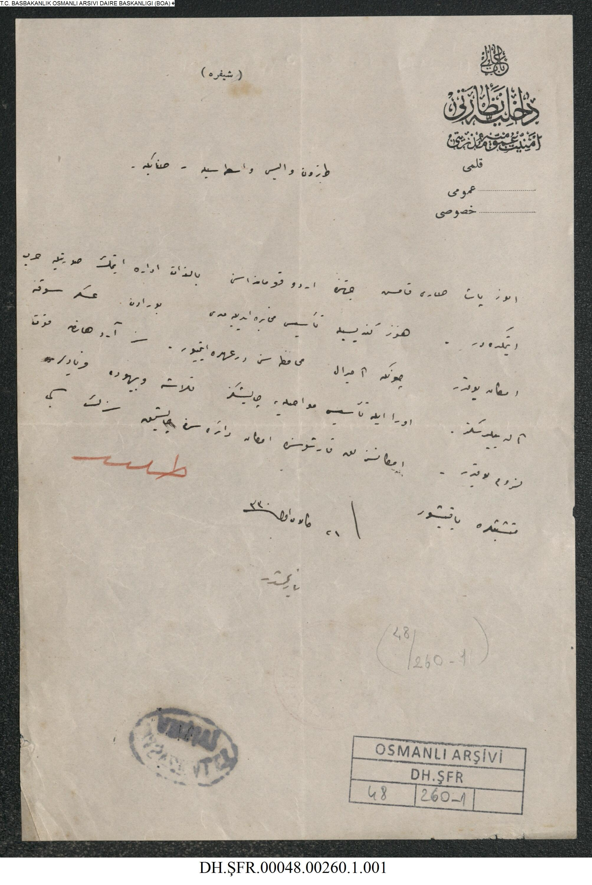

|
 |
DAHİLİYE NEZARETİEnver Paşa Sarıkamış'ın cihetinde ordu kumandasını bizzat irade etmek suretiyle harb etmektedir. Henüz kendisiyle tesisi muhabere edilemedi. Buradan asker sevki imkanı yoktur, çünkü amiral muhafazasını deruhde etmiyor. Siz Ardahan'a kuvvet ?. Ora ile tesisi muhabereye çalışınız. Telaş ve beyhude ? lüzumu yoktur. İmkansızlık karşısında imkan dairesinde çalışınız ? gibi ? ? 21 Kanunuevvel 1330 |